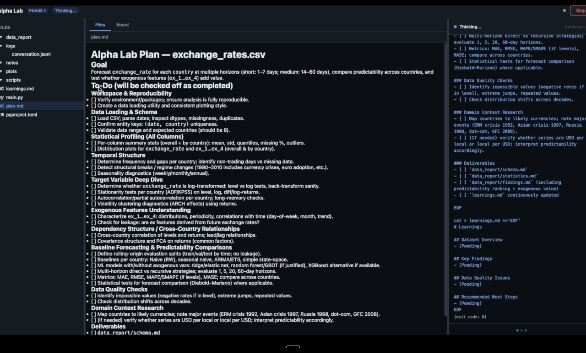
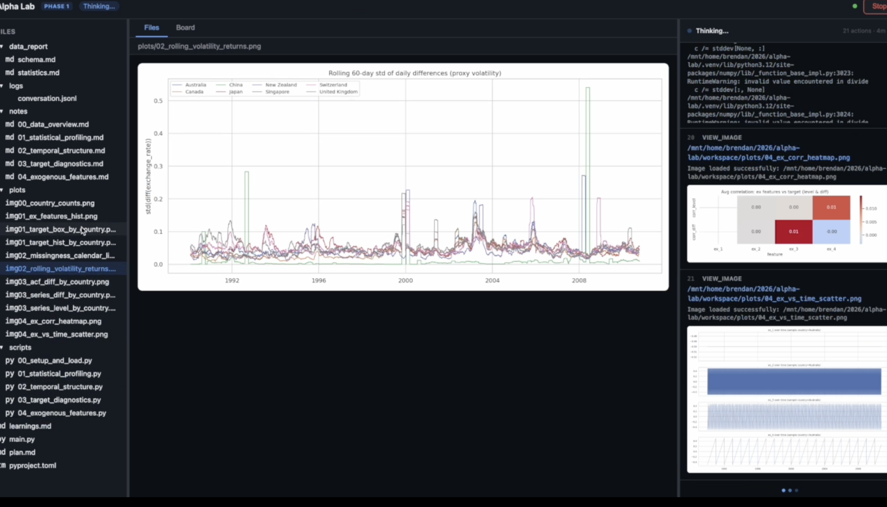
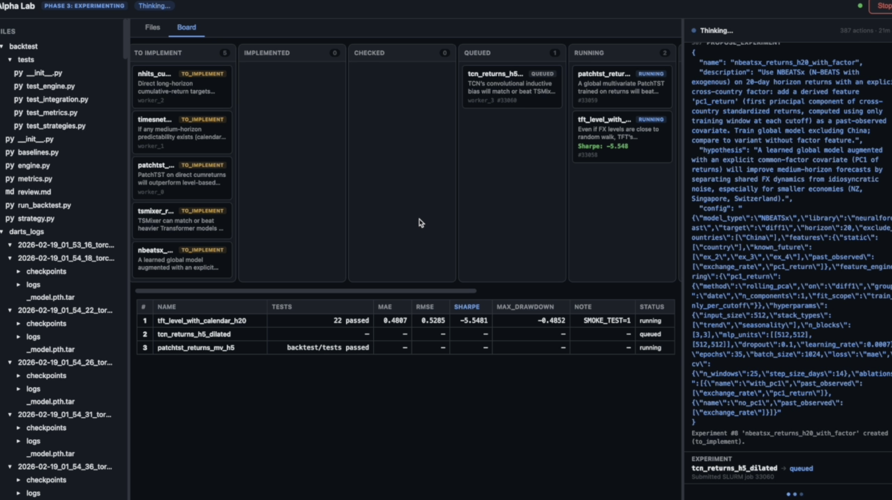
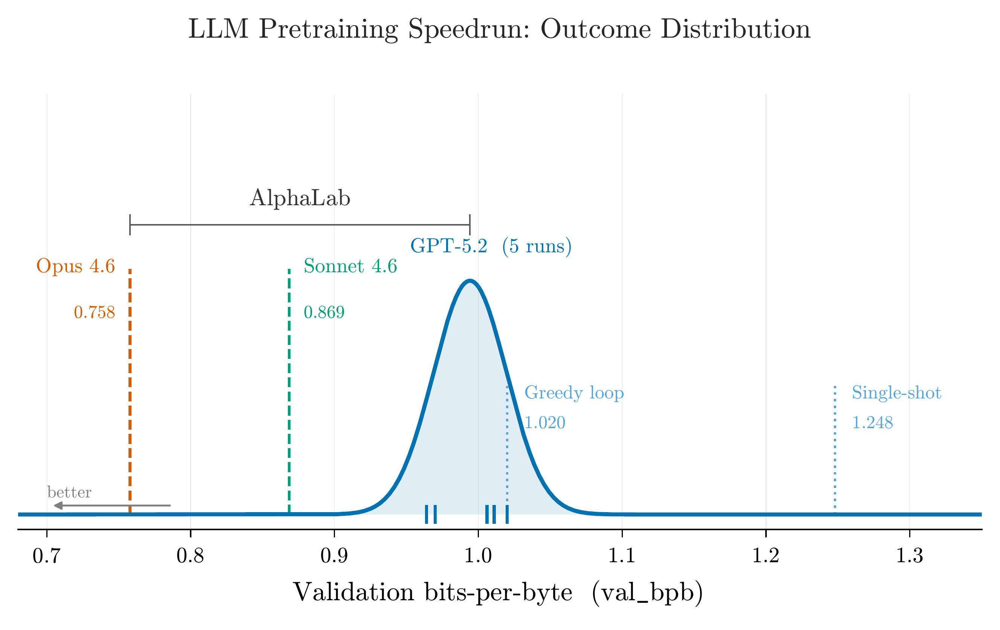
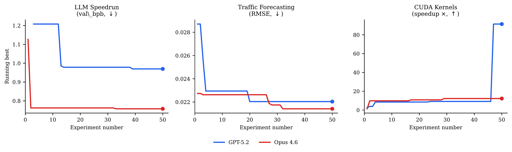
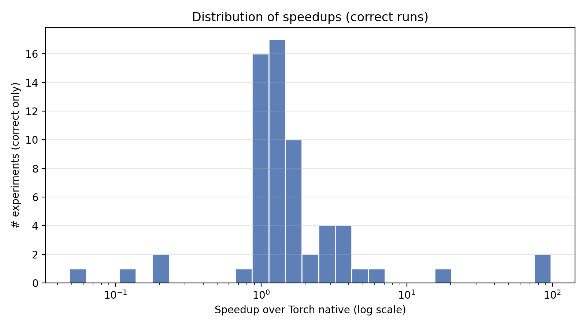

We present AlphaLab, an autonomous research harness that leverages frontier LLM agentic capabilities to automate the full experimental cycle in quantitative, computation-intensive domains. Given only a dataset and a natural-language objective, AlphaLab proceeds through three phases without human intervention: (1) it adapts to the domain and explores the data, writing analysis code and producing a research report; (2) it constructs and adversarially validates its own evaluation framework; and (3) it runs large-scale GPU experiments via a Strategist/Worker loop, accumulating domain knowledge in a persistent playbook that functions as a form of online prompt optimization.
We evaluate with two frontier LLMs (GPT-5.2 and Claude Opus 4.6) on three domains: CUDA kernel optimization, where it writes GPU kernels that run 4.4× faster than torch.compile on average (up to 91×); LLM pretraining, where the full system achieves 22% lower validation loss than a single-shot baseline; and traffic forecasting, where it beats standard baselines by 23–25%. The two models discover qualitatively different solutions in every domain—neither dominates uniformly—suggesting that multi-model campaigns provide complementary search coverage.
AlphaLab running autonomously on a simple synthetic time-series forecasting dataset (extremely sped up). In practice, Phase 1 (data exploration and literature research) takes 2–3 hours, Phase 2 (evaluation construction) takes about 1 hour, and Phase 3 (GPU experimentation) runs indefinitely—a single experiment iteration typically takes a few hours. The dashboard shows the Kanban board tracking experiments through their lifecycle, a live leaderboard ranking results, a file viewer for generated code, and a real-time stream of agent tool calls and reasoning.
All domain-specific behavior is parameterized by a domain adapter: 11 files comprising metric definitions, prompt templates for each agent role, and a domain knowledge document injected into every agent's context. For novel domains, the model generates all adapter files from scratch by examining the dataset and searching the web for relevant prior work. The key idea is that prompt engineering is performed by the model, grounded in the actual data.
An Explorer agent operates autonomously for several hours: it generates a plan, then works through it—writing and running Python scripts, generating plots, searching the web for relevant papers, and updating its notes after each finding. It produces a human-readable research report and machine-readable learnings consumed by later phases.

The Explorer agent's auto-generated research plan for the exchange-rate domain. Items are checked off as the agent completes them. The right pane shows real-time agent reasoning.

Analytical plots generated autonomously by the Explorer. The agent writes the Python scripts, generates the visualizations, and views them via the view_image tool to inform its analysis.
Evaluation correctness is the single most important property of an autonomous research system. A Builder constructs the full evaluation framework; a Critic (a fresh agent with no shared context) audits for data leakage, lookahead bias, and metric errors; and a Tester writes and runs an automated test suite. The loop iterates until all tests pass.
The core of the system: a sustained experimental campaign where the Strategist proposes experiments, Workers implement and execute them on a GPU cluster via Slurm, and a persistent playbook accumulates domain knowledge. Budget management graduates from broad exploration to focused refinement. A Supervisor monitors health and patches the domain knowledge when error rates spike.

Phase 3 dashboard: the Kanban board (center, top) shows experiments in various stages; the leaderboard (center, bottom) ranks completed experiments. The right pane shows the active Worker agent implementing an experiment.
A central finding is that different frontier models discover different solutions in every domain. On CUDA kernels, GPT-5.2 leads; on LLM pretraining and traffic forecasting, Opus 4.6 leads. Neither dominates uniformly. Even within the same model family, Opus and Sonnet 4.6 discover qualitatively different architectures.

LLM pretraining speedrun. The blue curve shows the distribution of best val_bpb across five independent runs with identical inputs. Opus 4.6 (orange) lies entirely to the left of every GPT-5.2 run. Multi-model campaigns access regions of the search space that neither model would find alone.
All campaigns show a characteristic pattern: rapid improvement in experiments 1–15 as the system explores the most promising architectural families, followed by diminishing returns in the refinement phase. By experiment 25–30, the running-best metric has typically stabilized to within 5% of the final value.

Convergence curves across all three domains. Both models improve rapidly in the first 10–15 experiments and plateau by 25–30.
On KernelBench (100 single-operator + 100 fusion tasks), AlphaLab writes custom GPU kernels and benchmarks them against PyTorch's optimized compiler. The system discovers algebraic rewrites (diagonal matmul → elementwise multiply, 68×), warp-shuffle reductions (75×), and operator fusion strategies (LayerNorm + residual, 91×). It also learns what not to attempt: handwritten convolution kernels consistently lose to cuDNN.

Distribution of per-task speedups over torch.compile. The distribution is heavy-tailed: a small number of tasks achieve extreme speedups (>10×), while most cluster in the 1–5× range.
The playbook is perhaps the most interesting artifact the system produces. It starts empty; by the end of a campaign it contains domain-specific methodology that did not exist anywhere in AlphaLab's prompts or code at launch. The "do not attempt" entries are as valuable as positive findings, preventing budget waste on disproven approaches.
@article{hogan2026alphalab,
author = {Hogan, Brendan R. and Chen, Xiwen and Wilson, James T.
and Rasul, Kashif and Boyarsky, Adel and Kamei, Thomas
and Schneider, Anderson and Nevmyvaka, Yuriy},
title = {AlphaLab: Autonomous Multi-Agent Research Across
Optimization Domains with Frontier LLMs},
journal = {arXiv preprint},
year = {2026}
}